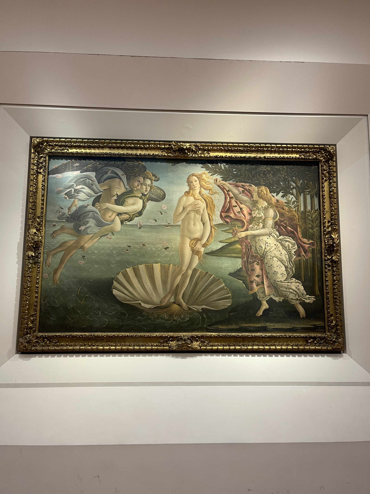

Must-See Artworks at the Uffizi Gallery
The Uffizi Gallery in Florence is home to an unrivaled collection of Renaissance masterpieces. With so much art on display, it can be overwhelming to decide where to start.

Highlights of the Collection
From Botticelli’s enchanting works to Michelangelo’s powerful sculptures, the gallery is a journey through the history of art. We’ve curated a list of the must-see pieces that you simply can’t miss.

Tips for Your Visit
Arrive early to avoid crowds, and consider booking a guided tour to gain deeper insights into the stories behind each masterpiece. The Uffizi is not just a museum—it’s an experience.